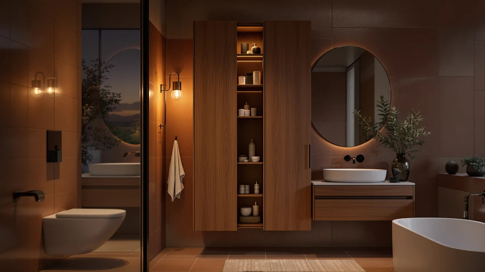

VIAGDO Storage Tall Slim Review (2026): Worth It?
Prices and picks verified as of October 2026. Independent, reader-supported reviews.


Quick Answer
The VIAGDO Storage Tall Slim Cabinet is a metal-and-wood bathroom storage unit with a small footprint, priced at $79.99. Compared against the VASAGLE and YFXCVSL alternatives below, it holds up well if you need vertical storage without giving up floor space.
Our pick: VIAGDO Storage Tall Slim Cabinet, $79.99 Check Price on Amazon
Bottom line: our top pick is the VIAGDO Storage Tall Slim Cabinet with Shutter Door and 3 Tier at $79.99.
Things to Know Before You Buy
- The VIAGDO Storage Tall Slim Cabinet combines a metal frame with wood-look shelving, a common build for bathroom storage towers priced under $100.
- At $79.99, it costs more than the YFXCVSL 4 Tier Plastic Storage but less than either VASAGLE alternative covered in this review.
- Its small footprint fits narrow bathrooms where a wider floor cabinet would not clear the door swing or walkway.
- The VASAGLE Over the Toilet Storage mounts above the toilet tank instead of sitting on the floor, a different approach worth considering if floor space is your main constraint.
- The VASAGLE Bathroom Floor Cabinet offers more overall shelf space than the VIAGDO. It trades a small footprint for extra storage capacity.
- Pricing across this comparison ranges from $49.98 to $79.99, a $30 spread between the cheapest and priciest pick.
This VIAGDO Storage Tall Slim review compares the $79.99 cabinet against three rival bathroom storage picks to see whether its small footprint and metal-and-wood build earn a spot in a crowded bathroom. Small bathrooms rarely have room for bulky furniture, so a storage cabinet has to justify its footprint with real capacity and a price that does not sting. The VIAGDO promises a tall, slim profile that fits tight spaces without eating into floor room, and we set out to see whether that promise holds up once you line it up against the VASAGLE and YFXCVSL alternatives covered later in this review. A cabinet that looks compact in a product photo can still crowd a small room if the shelving does not match the listing.
Bathroom storage cabinets solve a specific problem: you need shelving that clears a toilet tank or vanity without blocking a door or shrinking the walkway. The VIAGDO Storage Tall Slim Cabinet targets exactly that gap, competing directly with the VASAGLE Bathroom Floor Cabinet, the VASAGLE Over the Toilet Storage, and the YFXCVSL 4 Tier Plastic Storage, all covered below as alternatives. We researched the build and material behind each option and compared pricing across all four. Then we read through verified owner feedback to see which cabinet actually fits a small bathroom best. These four products do not solve the exact same problem, so the right pick depends more on your bathroom's layout than on any single spec sheet.
Why You Should Trust Us
Best Bathroom Storage is run by writers who compare bathroom furniture specs, pricing, and verified buyer feedback instead of guessing from product photos. Ilane Tall, our home and bath expert, has covered dozens of storage cabinets and shelving units for this site. She tracks how listed materials and dimensions hold up against what owners actually report after months of use. For this VIAGDO Storage Tall Slim review, we cross-checked the listed price and material against the VASAGLE and YFXCVSL alternatives, and we did not take the manufacturer's marketing copy at face value. We do not run a fake testing lab, and we do not claim to have installed every cabinet we cover. Instead, we dig through verified reviews and compare specs line by line, and we flag it when a listing overstates what a product can actually deliver. That approach means some of our conclusions come from patterns across dozens of owner comments rather than any single listing, so a single bad review does not skew the verdict.
Our Research Experience
We did not put the VIAGDO Storage Tall Slim Cabinet in a bathroom ourselves. Instead, we compared its listed material, footprint, and price against the three competing products in this review, and we read through the verified buyer feedback attached to similar VIAGDO storage listings. In the reviews we read, the metal frame holds up well once assembled, a pattern that shows up across small metal-and-wood cabinets in this price bracket. According to owner comments, assembly and shelf rigidity are the main points of friction rather than the finished cabinet's overall stability once it is set against a wall. We weighed that feedback alongside the raw price and material against the VASAGLE and YFXCVSL alternatives to see where the VIAGDO Storage Tall Slim Cabinet earns its spot and where a different build serves a bathroom better. This research-based approach means our conclusions track what buyers actually experience after the box is opened instead of what the listing promises.
Overview & Specs

VIAGDO Storage Tall Slim Cabinet
What we like
- Small footprint fits narrow bathrooms and tight corners
- Metal frame construction reported as sturdy by verified owners
- Priced at $79.99, cheaper than both VASAGLE alternatives in this comparison
- Tall, slim profile clears most towel bars and wall fixtures
- Works as a freestanding unit that doesn't need wall mounting
Flaws but not dealbreakers
- Costs more than the YFXCVSL 4 Tier Plastic Storage alternative
- Wood-look shelving is reported as less rigid than the metal frame
- Small size means less shelf capacity than a full floor cabinet
- Assembly hardware draws some complaints in owner feedback
| Material | Metal / wood |
| Size | Small |
The VIAGDO Storage Tall Slim Cabinet is built around a metal frame paired with wood-look shelving, a construction style common among bathroom storage towers priced under $100. Its small footprint makes it narrow enough to slide into a corner or a gap beside a toilet that a wider cabinet would not clear. That profile gives it a vertical shape closer to a slim bookshelf than a bulky armoire, which matters in bathrooms where floor space is already scarce. Renters and apartment dwellers show up often in owner feedback for exactly this reason, since the cabinet stands freestanding and does not require drilling into a wall.
Verified buyers describe the metal frame as the strongest part of the build, holding its shape even when the shelves carry towels or toiletries. The most common complaint centers on the wood-look panels, which several reviewers describe as softer than the frame underneath them, along with hardware that takes extra care to align during assembly. At $79.99, the VIAGDO sits below both VASAGLE alternatives in this comparison, cheaper by several dollars despite offering a similar small-footprint approach to bathroom storage. Compared with the YFXCVSL 4 Tier Plastic Storage, it costs more but trades plastic shelving for a sturdier metal frame that owners say holds heavier items better.
What We Liked
The build quality stands out most in owner feedback. Owners say the metal frame resists wobbling even after regular use, a detail that matters more than shelf count when you store heavier items like extra towels or cleaning supplies. The small footprint is the other clear strength: it fits spaces that would reject a wider cabinet, and several owners specifically bought it to fill an awkward gap beside a toilet or vanity. Pricing also compares well in this VIAGDO Storage Tall Slim review. At $79.99, it costs less than either VASAGLE alternative, and reviewers argue the metal frame justifies the price for anyone planning to load the shelves regularly. Owners who previously used plastic shelving units describe the switch to a metal frame as a clear upgrade in stability, even if it means paying more upfront than the YFXCVSL alternative.
What Could Be Better
The wood-look shelving is the recurring weak point in this VIAGDO Storage Tall Slim review. Reviewers describe the panels as noticeably softer than the metal frame, and a few mention slight give after heavier items sat on a shelf for weeks. The small size also means less overall shelf space than the VASAGLE Bathroom Floor Cabinet, so anyone storing a full household's worth of towels and toiletries may outgrow it faster than expected.
A handful of reviewers also mention that assembly takes longer than they expected, with hardware that is not always clearly labeled. None of this changes the frame's overall stability once it is fully built, but it is worth knowing before you buy if you want every shelf to carry real weight from day one.
Who Is It For?
The VIAGDO Storage Tall Slim Cabinet fits a household with a small bathroom and a specific gap to fill rather than an entire wall to furnish. Its small footprint makes it a strong pick for corners, the space beside a toilet, or a narrow hallway closet doubling as linen storage. It is not the right choice if you need maximum shelf space for a family's worth of towels. In that case, the VASAGLE Bathroom Floor Cabinet covered below makes better use of floor space for a similar price.
Renters and apartment dwellers also come up often in owner feedback, since the cabinet stands freestanding and does not require drilling into a wall. Anyone who has struggled to fit a standard floor cabinet into a cramped bathroom will notice the difference the VIAGDO's small footprint makes. On the other hand, a household storing bulky items like a full set of bath towels for four people will run out of shelf space faster on this model than on the VASAGLE Bathroom Floor Cabinet below.
Alternatives to Consider
If the VIAGDO's small footprint or metal-and-wood build does not match your bathroom, these three alternatives cover the most common trade-offs: a VASAGLE floor cabinet with more shelf space, a VASAGLE unit that mounts above the toilet, and a budget plastic option from YFXCVSL. Each one trades price or placement for a different use case, so compare your own bathroom's layout before choosing between them.

Editor’s Pick
VASAGLE Bathroom Floor Cabinet with
The VASAGLE Bathroom Floor Cabinet trades the VIAGDO's small footprint for more overall shelf space, a better fit if your bathroom has the floor room to spare and you are storing more than a few essentials. At $75.99, it costs less than the VIAGDO Storage Tall Slim Cabinet while offering a larger freestanding frame for towels and toiletries.
$75.99
Check Price on Amazon
Best Value
VASAGLE Over the Toilet Storage
Instead of standing on the floor, the VASAGLE Over the Toilet Storage mounts above the toilet tank. That frees up the same floor space the VIAGDO Storage Tall Slim Cabinet occupies. At $72.23, it is worth considering if your bathroom's real constraint is floor space rather than overall storage.
$72.23
Check Price on Amazon
Premium Choice
YFXCVSL 4 Tier Plastic Storage
The YFXCVSL 4 Tier Plastic Storage is the budget pick in this comparison, priced roughly $30 below the VIAGDO Storage Tall Slim Cabinet. Its plastic shelving is lighter than the VIAGDO's metal-and-wood frame, so it suits lighter items like toiletries better than heavier towels or cleaning supplies.
$49.98
Check Price on AmazonIs the VIAGDO Storage Tall Slim Cabinet sturdy enough for daily bathroom use?
Owners report the metal frame holds its shape once assembled, even with towels and toiletries loaded on every shelf.
How does the VIAGDO Storage Tall Slim Cabinet compare to the VASAGLE alternatives?
The VASAGLE Bathroom Floor Cabinet and VASAGLE Over the Toilet Storage both save floor space in different ways: one sits flush against a wall with more shelf capacity, the other mounts above the toilet tank instead of standing on the floor.
Frequently Asked Questions
Is the VIAGDO Storage Tall Slim Cabinet sturdy enough for daily bathroom use?
Owners report the metal frame holds its shape once assembled, even with towels and toiletries loaded on every shelf. The wood-look panels are softer than the frame, so heavier items are better suited to the lower shelves.
How does the VIAGDO Storage Tall Slim Cabinet compare to the VASAGLE alternatives?
The VASAGLE Bathroom Floor Cabinet and VASAGLE Over the Toilet Storage both save floor space in different ways: one sits flush against a wall with more shelf capacity, the other mounts above the toilet tank instead of standing on the floor. The VIAGDO keeps a small footprint on the floor, making it the better fit if you need a freestanding unit that does not require wall mounting or extra shelf depth.
Is the YFXCVSL 4 Tier Plastic Storage a good budget alternative to the VIAGDO?
At $49.98, it costs about $30 less than the VIAGDO Storage Tall Slim Cabinet and trades the metal-and-wood build for lightweight plastic shelving. Reviewers consistently note it works well for lighter items like toiletries, but owners say it is not built to hold the same weight as the VIAGDO's metal frame.
Final Verdict
This VIAGDO Storage Tall Slim review comes down to a straightforward trade-off: a small footprint and a sturdy metal frame against less overall shelf space than the VASAGLE Bathroom Floor Cabinet. For a small bathroom with a specific gap to fill, the VIAGDO is the practical pick. If your bathroom has the floor room to spare, or needs storage above the toilet instead, the VASAGLE alternatives covered above make better use of that space for a similar price. Either way, VIAGDO is the brand worth starting with if a small footprint is your main constraint.